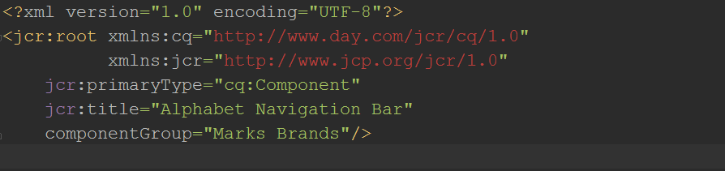

CQ5 for frontend developers
by Olena Svietlova
March 23, 2016
What is CQ5*?
Web Content Management System (WCMS)
It runs on Java based server and is platform independent.
It is one of the Adobe Marketing Cloud products which also includes Adobe Analytics, Adobe Target, Adobe Social, etc. and meant for large scale businesses.
* Communiqué5, or Adobe Experience Manager
Main features
- Create reusable components and templates
- Multilingual support, multisite management
- The web-based user interface using AJAX (drag-and-drop, in-place editing)
- User groups, workflows, content tagging
- Author and Publish instances, clustering
- Marketing campaigns management
- Integration with eCommerce systems and other Marketing Cloud products
Software with similar features:
Oracle WebCenter, Liferay Sites, WordPress, Drupal, Joomla!
Yet another CMS?
Enterprise Edition
AUTHORING AND PUBLISHING

Java Content Repository eXtreme (CRX)
object database that processes hierarchical data and stores metadata in xml
Digital Asset Management (DAM)
Adobe Scene7 integration – a Content Delivery Network or Content Distribution Network (CDN)
Getting started
Local CQ setup
- Install Java Development Kit (JDK) 1.7+
- Install Apache Maven (build tool for Java projects)
- Add path to the bin directory in the unpacked maven distributive
to system environment variable PATH - Download CQ instance. Start it by double clicking .jar file
- Clone the project repository and checkout develop branch
- Build and deploy the project:
File structure
Base path for front-end development:
cq/project-name-view/src/main/content/jcr_root/CQ pages
CQ components
Development Tools
- Integrated Development Environment
- Build tools (maven, grunt/gulp)
- Version control system (git, svn)
- Front-end tools (node, npm, etc)
Note: CQ has a built-in less compiler
Build & Deploy
Build and deploy whole project:
mvn clean install -P deploy-code,deploy-contentBuild and deploy all code:
mvn clean install -P deploy-codeBuild and deploy content:
mvn clean install -P deploy-contentTo deploy specific bundle or package:
mvn clean install -P auto-deployon specific sub-project to build and deploy it.
crxde-pipe plug-in
Simple tool for piping local changes to CQ (CRXDE)
Install
$ npm install crxde-pipe -gRun
$ crxde-pipe path/to/project/srcDeveloped by Yurii_Sorokin@epam.com
grunt-slang plug-in
...
watch: {
author: {
files: ['<%= pathTo.jcrRoot %>**/*.{css,xml,html,js,jsp,txt}'],
tasks: ['slang:author']
}
},
slang: {
author: {
options: {
port: '4502'
}
}
}
...
CRXDE Lite
for developing right in the browser
Clientlibs
js and css files can be concatenated by CQ:
- into one or several files
- based on abstract categorisation described in .xml
- each category can be included to particular page
Things to consider
- CQ wraps components into additional <div class="component-file-name">
- CQ adds default classes to wrappers (.section, .par-sys ...)
- Clientlibs are publicly accessible only when served from particular directories
- CQ also has its own cache
WHERE TO LEARN MORE?
- Adobe Experience Manager docimentation
- CQ5 Video School
- CQ based sites: Shevrolet, Nike
THANK YOU!
Any other questions?
mailto: olena_svietlova@epam.com